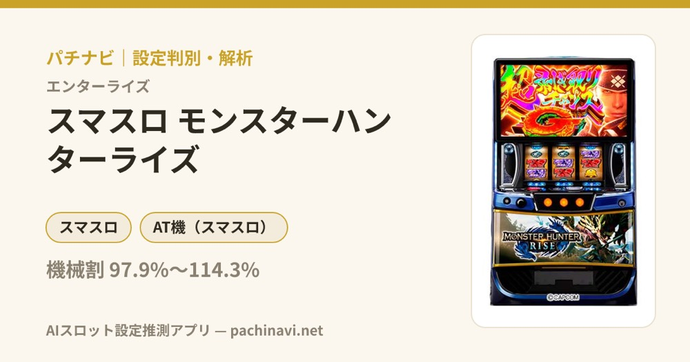

スマスロ モンスターハンターライズ
仲間と超抽選バトルへ。討伐、剥ぎ取り、百竜ノ淵源から気焔万丈を目指す。
- 導入
- 2024年11月
- メーカー
- アデリオン
- 分類
- パチスロ
主要スペック
集会所で仲間とモンスターを決め、25〜100G＋αの狩猟ボーナスで討伐を目指します。剥ぎ取りチャンス、10頭以降のエンディング、7Gの百竜ノ淵源チャレンジ、100Gの百竜ノ淵源BONUS、上位AT『気焔万丈』までを機種専用画面で体験できます。
- 狩猟ボーナスは25〜100G＋α・平均討伐約52%
- 剥ぎ取り銀50%・Gは50%ループ
- 百竜ノ淵源チャレンジ約67%・BONUS討伐約72%
スマスロ モンスターハンターライズの見どころと計算条件
集会所で仲間とモンスターを決め、25〜100G＋αの狩猟ボーナスで討伐を目指します。剥ぎ取りチャンス、10頭以降のエンディング、7Gの百竜ノ淵源チャレンジ、100Gの百竜ノ淵源BONUS、上位AT『気焔万丈』までを機種専用画面で体験できます。
モンハンライズを数字で早分かり
クエストから狩猟ボーナス、気焔万丈までの流れと、設定ごとの結果差を固定レートで比較できます。
30秒で分かるモンハンライズ
25〜100G＋αの超抽選バトルでモンスターを討伐し、剥ぎ取りで次の狩猟をつなぎながら百竜ノ淵源と上位ATを目指す討伐ループ型です。
こんな遊び方に向いている
- モンスターと仲間を見て討伐PUSHを楽しみたい
- 剥ぎ取り銀・金・G・超Gの違いを確認したい
- 10頭以降のエンディングから上位ATを狙いたい
遊ぶ前に確認したいこと
- BONUSゲーム数・平均討伐率・剥ぎ取り性能は公開値
- 百竜ノ淵源チャレンジ約67%・BONUS討伐約72%
- 未公表の仲間・攻撃抽選は体験用代表値
クエストから狩猟ボーナスへ
通常時はカムラポイント100ptごとのクエストや、リプレイ規定回数のアイルーだるま落としなどから狩猟ボーナスを目指します。AT初当りは設定1約1/309.5〜設定6約1/230.8です。
通常時の全ポイントモード・クエストテーブルは設定別AT初当りへ集約し、専用画面では当選後の集会所から実機の順で進めます。
25〜100G＋αの超抽選バトル
BARは25G＋α、赤7は40Gまたは50G＋α、紫7は60Gまたは100G＋α。通常時の純増は約2.7枚/G、紫7と上位中は約4.0枚/Gです。
平均討伐期待度は約52%。ベル連やレア役、参戦ハンター、状態異常などをまとめたモンスター別の討伐期待度で判定し、最終PUSHまで勝敗を伏せます。
剥ぎ取りチャンスで次の狩猟を獲得
討伐後は剥ぎ取りチャンスへ。銀は50%でボーナスストック、金はストック濃厚、Gはストック濃厚＋50%で継続、超Gはストック濃厚＋70%以上で継続します。
専用画面では剥ぎ取りの種類、ストック個数、次の集会所への継続を1回のPUSHで表示します。
百竜ノ淵源から上位AT『気焔万丈』へ
10頭以上討伐後は終了時にエンディングを抽選し、15頭以上なら発生濃厚。エンディング後は7G・成功期待度約67%の百竜ノ淵源チャレンジへ進みます。
成功後の百竜ノ淵源BONUSは100G・討伐期待度約72%。ナルハタタヒメ討伐で超剥ぎ取りチャンスGと上位AT『気焔万丈』を獲得し、以後のボーナス純増が約4.0枚/Gになります。
固定条件と簡略化する範囲
- 約32.7G/50枚・1,000円46枚貸し・5.2枚交換で固定
- 設定1〜6のAT初当り・出玉率は公開設定別値を使用
- BONUS図柄、保障ゲーム数、平均討伐率、剥ぎ取り性能、上位CZ・BONUSは公開値を優先
- 仲間構成、状態異常、細かな攻撃抽選、図柄内のゲーム数比率など未公表部分は体験用代表値
- 19,000枚到達時はコンプリート表示
平均Gと投資目安の計算
掲載する狩猟ボーナス初当り約1/309.5は設定1基準です。当サイトでは50枚あたり32.7G、1,000円46枚貸しの固定条件から、設定1基準の平均投資目安を約10,300円と計算します。
シミュレーターでは設定1〜6を均等抽選します。設定1〜6で公開されている初当り値を個別に使います。公開されていない特化ゾーン・上位到達率の設定差は加えません。 換金は5.2枚交換で固定し、結果とランキングに設定を表示します。
シミュレーション結果の見方
当るまでクエスト・狩猟ボーナスまでのゲーム数
設定設定1・2・3・4・5・6から抽選された今回の設定
上位到達百竜ノ淵源チャレンジと気焔万丈への到達
最終収支差枚と5.2枚交換の収支目安
結果は自動で「マイ記録」に保存され、同じ機種を何回試したか、最高収支、勝率をあとから確認できます。
簡易シミュレーターについて
クエスト・狩猟ボーナス・気焔万丈の流れを固定条件で体験できます。JavaScriptを有効にすると、この位置にシミュレーター、演出、マイ記録、機種別ランキングが表示されます。
結果は娯楽・確率理解のための参考表示です。金銭的価値や交換価値はなく、実際の勝敗や収支を保証しません。18歳未満の方の利用はお控えください。
モンハンライズのよくある質問
モンハンライズはどんな台？
集会所で仲間とモンスターを決め、25〜100G＋αの狩猟ボーナスで討伐を目指します。 狩猟ボーナスは25〜100G＋α・平均討伐約52%が主な確認ポイントです。
モンハンライズの平均投資目安は？
設定1基準の狩猟ボーナス初当り約1/309.5と、50枚あたり32.7G・46枚貸しの固定条件から、平均10,300円を目安として表示します。実際の設定や遊技状況で結果は変わります。
設定とゲームの流れはどう抽選する？
開始時に設定1・2・3・4・5・6から1つを均等抽選し、クエスト、狩猟ボーナス、百竜ノ淵源チャレンジ、気焔万丈の順で到達を判定します。設定は最終結果とランキングに表示します。
収支はどう計算する？
1,000円46枚貸し・5.2枚交換の固定条件で投資、換金、収支目安を計算します。実店舗の再プレイ、持ちメダル、端数処理は含みません。